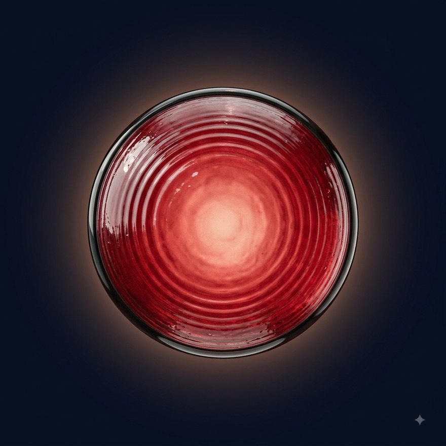
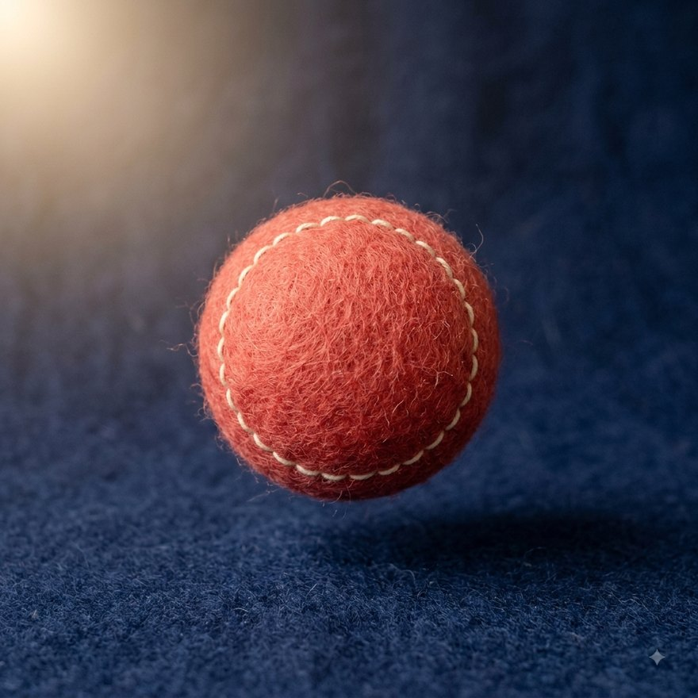
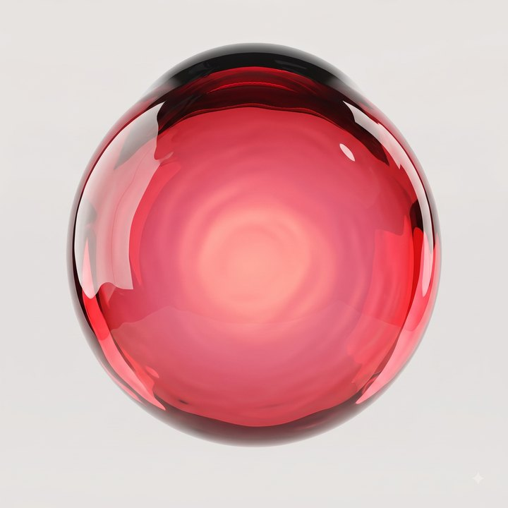

오늘의 말하기 · 03
요즘 어떻게 지내요?
— 내 대답 32초
— 내 대답 32초
① 숙제 카드
→

② 카드가 접혀 날아간다
→
보냈어요
③ 그 다음에야 «완료»
이전 판과 두 가지가 다릅니다. ①그래픽이 진짜입니다 — CSS 흉내가 아니라 마스코트 재질을 참조해 생성한 렌더가 화면의 무대 자체가 됩니다. ②상자를 버렸습니다 — 질문이 주인공(편집 타이포), 화면의 색 1점은 오브 하나뿐. ⚠정지 화면의 한계도 정직하게: 눌림의 쫀득함·목소리에 출렁이는 반응(모션 물성)은 코드 단계에서 붙습니다 — 여기 보이는 것은 «세계»까지입니다.
유호님이 고른 레퍼런스 셋의 공통 문법(순흑 무대 · 실물 재질 오브 1점 · 안이 들여다보임)을 우리 오브에 그대로 이식해 실제로 구웠습니다(Nano Banana 2 · 마스코트 재질 참조). ⚠이 판은 젤리 재질로 구운 «조립 시연»입니다 — 재질 픽(ㄴ/ㄷ)은 여전히 유호님 몫이고, 펠트로 픽이 나면 스타일 블록만 바꿔 같은 문법을 다시 굽습니다.

encased(안이 보인다) 문법의 이식 — 반투명 셸 속 수집물이 곧 그 학생의 오늘입니다. 하나 배울 때마다 오브 «안에» 별이 하나 내려앉는 그림 — 개인화(㉡사람 이해)가 처음으로 눈에 보이는 자리이고, 눈금 링(계기 문법)은 실제 앱에서 천천히 돌며 녹음·진행 상태를 말합니다.
전환 서사 층(재질 픽과 독립) — 유호님 말 그대로: 「숙제를 보내면 그냥 완료가 아니라, 종이접기 애니메이션 뒤에 완료」. 보내는 순간이 작은 상이 됩니다. 규칙: 한 매듭에 서사 1개 · 800ms 안 · 스킵 가능 — 모든 버튼이 서사를 가지면 전부 소음이 되기에, 매듭(제출·달성)에만 씁니다.
채택 문법 5 → 앱의 자리
① 아이콘도 재질로 굽는다 → 탭·훈장·배지(젤리 3D 아이콘 세트)
② 계기 링 → 녹음·진행 크롬(렌더 오브 + 코드 벡터 눈금 합성)
③ 안이 보인다 → 성장 오브(왼쪽 실물)
④ 살아있는 표정 → 마스코트 눈 마이크로 반응(시선·깜빡임·완료 반달눈 — 입은 아낀다 그대로)
⑤ 전환 서사 → 제출=종이비행기(오른쪽) · 이후 매듭마다 1개씩만

물결 링이 도는 유리 렌즈 — 녹음 중이라는 상태를 오브의 «몸»이 말한다. 앱에서는 이 링이 학생 목소리 크기에 맞춰 실시간으로 출렁인다(놀라움 1호). 마스코트와 같은 재질이라, 캐릭터가 없는 화면에도 같은 세계가 산다.

손바느질 스티치가 도는 양모 볼 — 온기·수공예 감각은 다섯 후보 중 최강이고, 몽골 양모 문화와 정확히 닿는다. 대가도 그대로: 마스코트 전면 재생성 + 모든 화면 부품을 이 질감으로 다시 굽는 비용, 그리고 「유아용」으로 읽힐 위험.

이 오브는 마스코트 확정 렌더를 참조로 넣어 같은 재질·같은 조명으로 구워낸 전용 자산입니다(2048px 원판 보유). CSS 몇 줄로는 이 유리의 깊이·굴절·물결이 안 나옵니다 — 명품 느낌의 반은 여기서 나고, 나머지 반은 정지 화면에 없는 모션 물성에서 납니다. ⚠시안용 렌더라 우하단에 생성 표식이 있고, 확정 시 원판을 정리해 다시 뽑습니다.